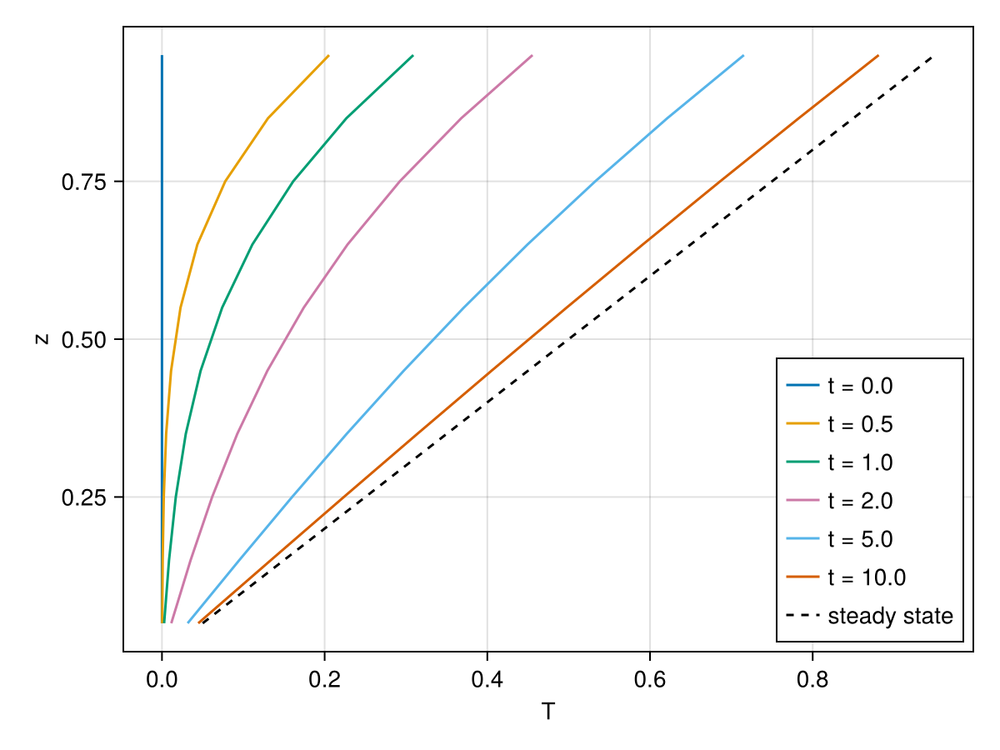
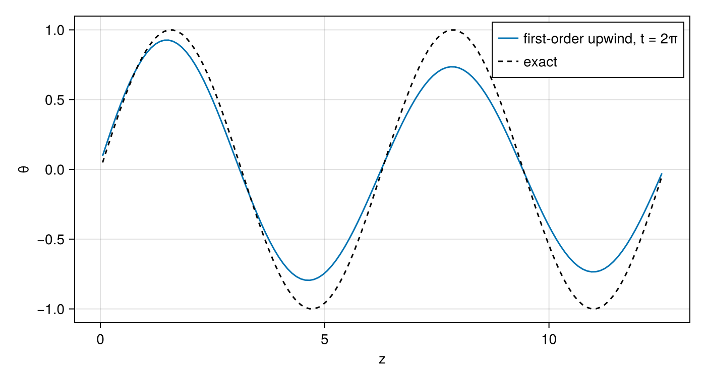
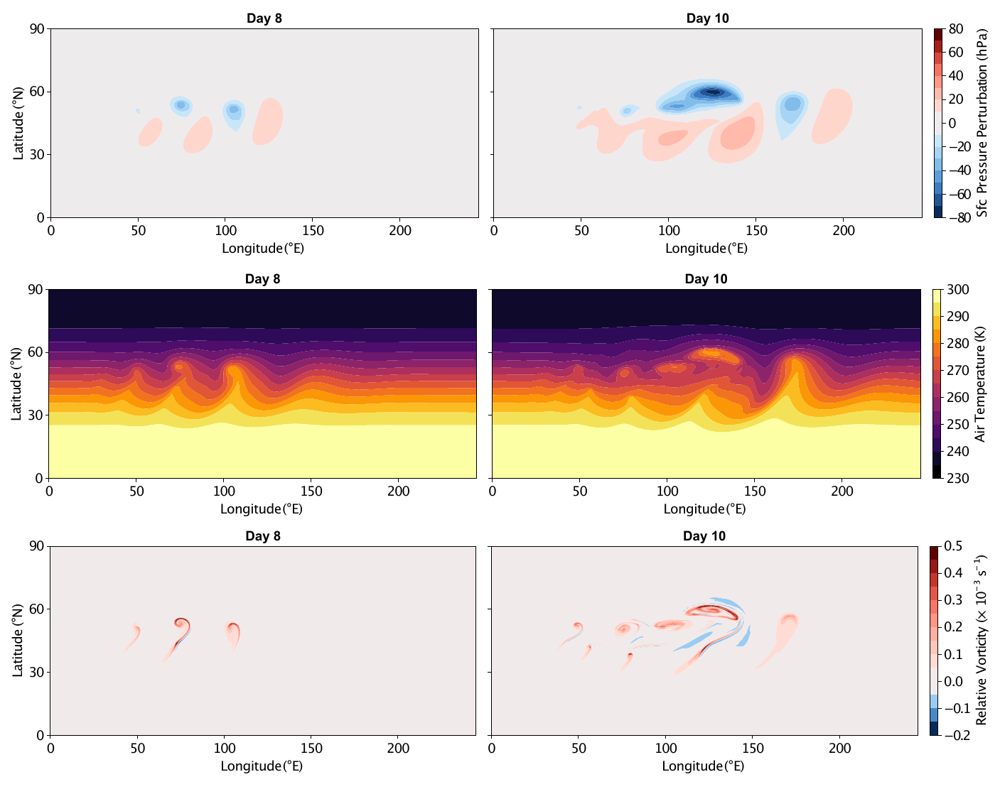
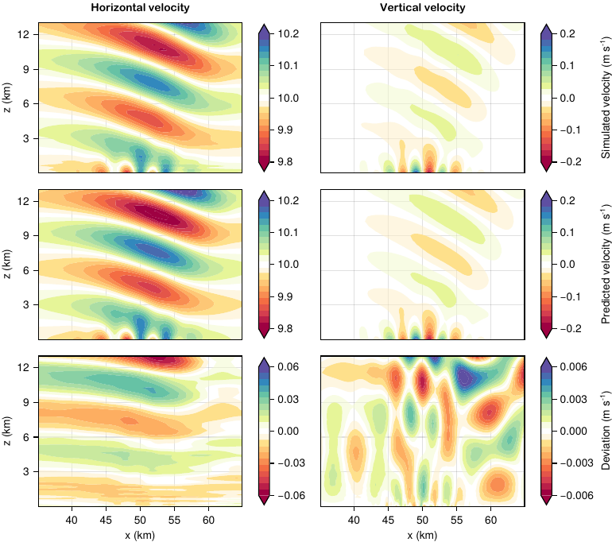

Example gallery
The examples/ directory holds runnable cases that exercise the library; Run the examples says how to run them. This page states the equations of the documented cases in the notation of the explanation pages and shows how each script discretizes them, quoting the script's own tendency function. Most code blocks are copied from the scripts, which CI runs, and are not re-executed by the documentation build; the two column cases below run a compact version here to draw a figure. Figures from [2] illustrate the costlier cases. The last section lists the remaining cases with the feature each demonstrates.
Notation: ρ density, q tracer concentration per unit mass, u velocity with covariant components u_i (Covariant12Vector in the horizontal, Covariant3Vector in the vertical) and contravariant components uⁱ; ∇ₕ ⋅, ∇ₕ the horizontal spectral-element divergence and gradient, of which Divergence{WeakForm} is the weak form (Spectral elements: CG and DG); ∂ᵥ the vertical finite-difference derivative between cell faces and centers (Staggered vertical discretization). Weak-form horizontal tendencies are completed by DSS (DSS and numerical fluxes).
Heat equation on a column
examples/column/heat.jl solves
\[\frac{\partial T}{\partial t} = \alpha\, \nabla^2 T\]
on z ∈ [0, 1] with 10 cells, T = 0 at the bottom and ∂T/∂z = 1 at the top, starting from T = 0. The temperature lives on cell centers. The Laplacian is a center-to-face gradient followed by a face-to-center divergence, and both boundary conditions enter through the gradient at the boundary faces: the Dirichlet value through gradient_c2f_dirichlet, which builds the SetGradient stencil a prescribed boundary value implies, and the Neumann value as an explicit SetGradient.
import ClimaComms
ClimaComms.@import_required_backends
import ClimaCore: Fields, Domains, Meshes, Operators, Geometry, Spaces
import ClimaTimeSteppers as CTS
using CairoMakie
FT = Float64
domain = Domains.IntervalDomain(
Geometry.ZPoint{FT}(0),
Geometry.ZPoint{FT}(1);
boundary_names = (:bottom, :top),
)
mesh = Meshes.IntervalMesh(domain; nelems = 10)
cspace = Spaces.CenterFiniteDifferenceSpace(ClimaComms.device(), mesh)
T = Fields.zeros(FT, cspace)
α, T_bottom, dTdz_top = FT(0.1), FT(0), FT(1)
function tendency!(dT, T, _, t)
∇T = Operators.gradient_c2f_dirichlet(
T;
bottom = T_bottom,
top = Operators.SetGradient(Geometry.WVector(dTdz_top)),
)
divf2c = Operators.DivergenceF2C()
return @. dT = α * divf2c(∇T)
end
prob = CTS.ODEProblem(CTS.ClimaODEFunction(; T_exp! = tendency!), T, (0.0, 10.0), nothing)
sol = CTS.solve(
prob,
CTS.ExplicitAlgorithm(CTS.SSP33ShuOsher());
dt = 0.02,
saveat = [0.0, 0.5, 1.0, 2.0, 5.0, 10.0],
)
z = vec(parent(Fields.coordinate_field(cspace).z))
fig = Figure(; size = (600, 450))
ax = Axis(fig[1, 1]; xlabel = "T", ylabel = "z")
for (t, u) in zip(sol.t, sol.u)
lines!(ax, vec(parent(u)), z; label = "t = $(round(t; digits = 1))")
end
lines!(ax, z, z; color = :black, linestyle = :dash, label = "steady state")
axislegend(ax; position = :rb)
fig
The column heats from T ≡ 0 toward the steady state T = z. The run checks the profile against the separable exact solution at every saved time. Solve a column PDE walks through the same problem.
Advection on a column
examples/column/advect.jl solves
\[\frac{\partial \theta}{\partial t} = -\frac{\partial (w\, \theta)}{\partial z}\]
on z ∈ [0, 4π] with 128 cells, a constant upward velocity w on faces, and θ(z, 0) = sin z, so the exact solution is the translated sine wave and also supplies the boundary values. The script compares four discretizations of the same equation:
Flux form, upwind: the face flux
w θis reconstructed by first-order upwinding and differenced back to centers.UpwindBiasedProductC2Fhas no boundary-value condition of its own, soupwind_biased_product_c2f_dirichletevaluates the upwind stencil at the two boundary faces with the exactθoutside the domain.upwind_flux(θ, t) = Operators.upwind_biased_product_c2f_dirichlet( w, θ; left = exact_θ(z_left, t), right = exact_θ(z_right, t), ) function tendency_upwind!(dθ, θ, _, t) flux = upwind_flux(θ, t) divf2c = Operators.DivergenceF2C() return @. dθ = -divf2c(flux) endAdvective form, centered:
w ∂θ/∂zfrom a center-to-face gradient, contracted with the contravariant velocity and interpolated back to centers. At the inflow face, the gradient is the one implied by the exact value outside the domain; at the outflow face, it is extrapolated from the last two centers.function tendency_centered!(dθ, θ, _, t) ∇θ = centered_advection_gradient(θ, t) interpf2c = Operators.InterpolateF2C() return @. dθ = -interpf2c(Geometry.dot(Geometry.Contravariant3Vector(w), ∇θ)) endEither form plus a flux correction: a diffusive flux with diffusivity
|w| Δz, built from a center-to-face gradient (zero on both boundary faces, so no correction flux crosses them) and a face-to-center gradient. First-order upwinding introduces numerical diffusion of half this size, so adding the term to the upwind form doubles it and adding it to the centered form supplies the diffusion that form lacks.function tendency_upwind_corrected!(dθ, θ, _, t) flux = upwind_flux(θ, t) divf2c = Operators.DivergenceF2C() correction = flux_correction(θ) return @. dθ = -divf2c(flux) + correction end
The first-order upwind flux form, integrated over one period, shows the numerical diffusion the bullets describe: the wave returns to sin z but with a damped amplitude.
domain = Domains.IntervalDomain(
Geometry.ZPoint{FT}(0),
Geometry.ZPoint{FT}(4π);
boundary_names = (:left, :right),
)
mesh = Meshes.IntervalMesh(domain; nelems = 128)
cspace = Spaces.CenterFiniteDifferenceSpace(ClimaComms.device(), mesh)
fspace = Spaces.FaceFiniteDifferenceSpace(cspace)
w = Geometry.WVector.(ones(FT, fspace))
exact_θ(z, t) = sin(z - t)
z_left, z_right = FT(0), FT(4π)
function tendency_upwind!(dθ, θ, _, t)
flux = Operators.upwind_biased_product_c2f_dirichlet(
w, θ; left = exact_θ(z_left, t), right = exact_θ(z_right, t),
)
divf2c = Operators.DivergenceF2C()
return @. dθ = -divf2c(flux)
end
θ₀ = exact_θ.(Fields.coordinate_field(cspace).z, 0)
prob = CTS.ODEProblem(
CTS.ClimaODEFunction(; T_exp! = tendency_upwind!),
θ₀,
(0.0, 2π),
nothing,
)
sol = CTS.solve(
prob,
CTS.ExplicitAlgorithm(CTS.SSP33ShuOsher());
dt = 2π / 400,
saveat = [0.0, 2π],
)
z = vec(parent(Fields.coordinate_field(cspace).z))
fig = Figure(; size = (700, 380))
ax = Axis(fig[1, 1]; xlabel = "z", ylabel = "θ")
lines!(ax, z, vec(parent(sol.u[end])); label = "first-order upwind, t = 2π")
lines!(ax, z, exact_θ.(z, 2π); color = :black, linestyle = :dash, label = "exact")
axislegend(ax; position = :rt)
fig
Tracer transport with limiters
Three scripts solve the same transport problem on different geometries: mass and a tracer density carried by a prescribed, time-reversing flow, so that the tracer must return to its initial shape, with the horizontal transport limited by Limiters.QuasiMonotoneLimiter [14]:
\[\frac{\partial \rho}{\partial t} + \nabla \cdot (\rho u) = 0, \qquad \frac{\partial \rho q}{\partial t} + \nabla \cdot (\rho q\, u) = -\nu_4\, \nabla_h \cdot \bigl(\rho\, \nabla_h \nabla_h^2 q\bigr).\]
The right-hand side is fourth-order horizontal hyperdiffusion of the concentration, written as two Laplacian passes with a DSS of the intermediate field between them (see the CG and DG page); ν₄ is zero by default on the plane. The initial conditions are cosine bells, Gaussian bells, or slotted cylinders (cylinders, slotted_spheres).
Plane (examples/plane/limiters_advection.jl): a doubly periodic square [−2π, 2π]² with the rotation u = −u₀ (y − c_y) cos(πt/T), v = u₀ (x − c_x) cos(πt/T), reversed at t = T/2. The whole tendency is the weak divergence of the fluxes:
function tendency!(yₜ, y, parameters, t)
(; u, Δₕq) = parameters
grad = Operators.Gradient()
wdiv = Operators.Divergence{Operators.WeakForm}()
coord = Fields.coordinate_field(axes(u))
@. u = Geometry.UVVector(
-u0 * (coord.y - flow_center.y) * cospi(t / end_time),
u0 * (coord.x - flow_center.x) * cospi(t / end_time),
)
@. Δₕq = wdiv(grad(y.ρq / y.ρ))
Spaces.weighted_dss!(Δₕq)
@. yₜ.ρ = -wdiv(y.ρ * u)
@. yₜ.ρq = -wdiv(y.ρq * u) - D₄ * wdiv(y.ρ * grad(Δₕq))
endThe limiter and the DSS are callbacks of the time stepper, run after each stage: the bounds come from the stage's starting state y_ref, and the limited tracer is then made continuous.
function lim!(y, parameters, t, y_ref)
Limiters.compute_bounds!(parameters.limiter, y_ref.ρq, y_ref.ρ)
Limiters.apply_limiter!(y.ρq, y.ρ, parameters.limiter)
end
dss!(y, parameters, t) = Spaces.weighted_dss!(y)Sphere (examples/sphere/limiters_advection.jl): the same tendency on a cubed sphere with the deformational flow of the standard test [14], u = k sin²λ sin 2φ cos(πt/T) + (2πR/T) cos φ, v = k sin 2λ cos φ cos(πt/T), over T = 12 days. The velocity is set in the orthonormal (UVVector) basis and the operators convert it; nothing in the tendency refers to the geometry.
Box (examples/hybrid/box/limiters_advection.jl): an extruded domain [−2π, 2π]² × [0, 4π] with the rotation above plus a vertical velocity w = u₀ sin(πz/z_top) cos(πt/T). The horizontal tendency is the plane's; the vertical tendency reconstructs face fluxes from center values and differences them back with zero flux through the top and bottom. Density is interpolated to faces; the tracer is carried by third-order upwinding on the vertical velocity component and by interpolation on the horizontal one.
function vertical_tendency!(yₜ, y, cache, t)
(; face_u, params) = cache
Ic2f = Operators.InterpolateC2F()
vdivf2c = Operators.DivergenceF2C(
top = Operators.SetValue(Geometry.Contravariant3Vector(FT(0))),
bottom = Operators.SetValue(Geometry.Contravariant3Vector(FT(0))),
)
upwind3 = Operators.Upwind3rdOrderBiasedProductC2F(
bottom = Operators.Extrapolate(1),
top = Operators.Extrapolate(1),
)
ax12 = (Geometry.Covariant12Axis(),)
ax3 = (Geometry.Covariant3Axis(),)
@. face_u = local_velocity(params, Fields.coordinate_field(face_u), t)
@. yₜ.ρ = -vdivf2c(Ic2f(y.ρ) * face_u)
@. yₜ.ρq =
-vdivf2c(Ic2f(y.ρq) * Geometry.project(ax12, face_u)) -
vdivf2c(Ic2f(y.ρ) * upwind3(Geometry.project(ax3, face_u), y.ρq / y.ρ))
endThe limiter acts on the horizontal spectral-element structure, so its place in the sequence matters: horizontal transport, limiter, vertical transport, DSS.
Shallow water on the sphere
examples/sphere/shallow_water.jl solves the shallow-water equations in vector-invariant form [43] on the cubed sphere,
\[\frac{\partial h}{\partial t} + \nabla \cdot (h u) = -\nu_4 \nabla^4 h, \qquad \frac{\partial u_i}{\partial t} + \bigl((f + \nabla \times u) \times u\bigr)_i = -\nabla_i \left(g (h + h_s) + \tfrac12 \|u\|^2\right) - \nu_4 (\nabla^4 u)_i,\]
with h the fluid depth, h_s the surface height, f the Coriolis parameter, and biharmonic hyperdiffusion on both variables. The velocity is a Covariant12Vector; its curl is a Contravariant3Vector (the vertical vorticity), and the cross product with u returns covariant components. The scalar hyperdiffusion is two weak-divergence-of-gradient passes; the vector hyperdiffusion is two passes of the grad-div minus curl-curl vector Laplacian. Both intermediates are made continuous by one DSS before the second pass, and the completed tendency by a final DSS.
function rhs!(dYdt, y, parameters, t)
(; f, h_s, ghost_buffer, params) = parameters
D₄ = params.ν₄ * Spaces.node_horizontal_length_scale(axes(y))^3
div = Operators.Divergence()
wdiv = Operators.Divergence{Operators.WeakForm}()
grad = Operators.Gradient()
wgrad = Operators.Gradient{Operators.WeakForm}()
curl = Operators.Curl()
wcurl = Operators.Curl{Operators.WeakForm}()
# first Laplacian pass of the hyperdiffusion
@. dYdt.h = wdiv(grad(y.h))
@. dYdt.u =
wgrad(div(y.u)) -
Geometry.Covariant12Vector(wcurl(Geometry.Covariant3Vector(curl(y.u))))
Spaces.weighted_dss!(dYdt, ghost_buffer)
# second pass, then the dynamics
@. dYdt.h = -D₄ * wdiv(grad(dYdt.h))
@. dYdt.u =
-D₄ * (
wgrad(div(dYdt.u)) -
Geometry.Covariant12Vector(wcurl(Geometry.Covariant3Vector(curl(dYdt.u))))
)
@. begin
dYdt.h += -wdiv(y.h * y.u)
dYdt.u += -grad(params.g * (y.h + h_s) + norm(y.u)^2 / 2) + y.u × (f + curl(y.u))
end
Spaces.weighted_dss!(dYdt, ghost_buffer)
return dYdt
endThe hyperdiffusion coefficient scales with the cube of the node spacing, so ν₄ is a resolution-independent input. Five test cases are selected by the first command-line argument: steady_state and steady_state_compact (cases 2 and 3 of [44], zonal geostrophic flows whose exact solution is the initial state, with an optional rotation angle α of the flow axis against the cubed-sphere axis), mountain (case 5, flow over an isolated mountain through h_s), rossby_haurwitz (case 6), and barotropic_instability (the unstable zonal jet of [45]). Shallow water on a plane is the same formulation on a Cartesian plane.
Deformation flow on the extruded sphere
examples/hybrid/sphere/deformation_flow.jl is the three-dimensional transport test 1.1 of [46]: five tracers carried by a prescribed, reversing deformational flow on a shell from the surface to 12 km, with the horizontal limiter of the previous section and a choice of vertical flux-corrected transport. The horizontal tendency uses the strong divergence for transport and the weak form for the hyperdiffusion:
function horizontal_tendency!(Yₜ, Y, cache, t)
(; u, Δₕq) = cache
@. u = local_velocity(Fields.coordinate_field(Y.c), t)
@. Δₕq = hwdiv(hgrad(Y.c.ρq / Y.c.ρ))
Spaces.weighted_dss!(Δₕq)
@. Yₜ.c.ρ = -hdiv(Y.c.ρ * u)
@. Yₜ.c.ρq = -hdiv(Y.c.ρq * u) - D₄ * hwdiv(Y.c.ρ * hgrad(Δₕq))
endThe vertical tendency interpolates the density to faces with the Jacobian-weighted interpolation (WeightedInterpolateC2F, so that the face density is consistent with the cell masses) and reconstructs the tracer face flux with the operator selected at run time: plain interpolation, first- or third-order upwinding, Zalesak flux-corrected transport (the default), a TVD slope-limited flux, or the van Leer limiter. The FCT operators take the antidiffusive flux (third-order minus first-order) and the bounds it must respect:
@. face_ρ = winterp(J, Y.c.ρ)
@. Yₜ.c.ρ = -vdiv(face_ρ * face_u)
# with fct_op == FCTZalesak:
@. Yₜ.c.ρq =
-vdiv(
face_ρ * upwind1(face_u, q) +
FCTZalesak(
face_ρ * (upwind3(face_u, q) - upwind1(face_u, q)),
tuple(q / dt, q / dt - vdiv(face_ρ * upwind1(face_u, q)) / Y.c.ρ),
),
)where vdiv is a DivergenceF2C with zero flux at the top and bottom and the upwind operators extrapolate at the boundaries. The run reports the conservation errors of mass and of each tracer, and the limiter and FCT combinations are compared against the analytic return to the initial state. Limit tracers collects the limiter calls.
Baroclinic wave on the extruded sphere

Dry baroclinic wave on the sphere: surface pressure perturbation (top), air temperature (middle), and relative vorticity (bottom) at day 8 (left) and day 10 (right), as the balanced jet breaks into cyclones. From [2].
examples/hybrid/sphere/baroclinic_wave_rhoe.jl integrates the dry compressible Euler equations on a cubed-sphere shell, with continuous (CG) horizontal spectral elements and vertical finite differences. It is the standard dry-dynamical-core benchmark of [47]: a balanced zonal jet, perturbed by a localized bump, grows over ten days into a breaking wave. Total energy ρe is the prognostic thermodynamic variable, so the equations are
\[\frac{\partial \rho}{\partial t} = -\nabla \cdot (\rho u), \qquad \frac{\partial \rho e}{\partial t} = -\nabla \cdot \bigl((\rho e + p)\, u\bigr),\]
\[\frac{\partial u}{\partial t} + (f + \nabla \times u) \times u = -\nabla\!\left(\tfrac12 \|u\|^2 + \Phi\right) - \frac{1}{\rho}\,\nabla p,\]
with geopotential Φ and pressure p recovered from the internal energy ρe/ρ − ‖u‖²/2 − Φ through the ideal-gas law (pressure_ρe in the script). The momentum is written in vector-invariant form and stored as the horizontal covariant velocity uₕ on cell centers and the vertical velocity w on cell faces (ᶜ and ᶠ mark center and face fields).
The vertical acoustic terms set the fastest time scale, so they are integrated implicitly and the rest explicitly (the IMEX method SSP333). The implicit tendency holds the vertical part, built from the finite-difference vertical divergence ᶜdivᵥ, gradient ᶠgradᵥ, and the center/face interpolations:
function implicit_tendency!(Yₜ, Y, p, t)
ᶜρ = Y.c.ρ
ᶜuₕ = Y.c.uₕ
ᶠw = Y.f.w
(; ᶜK, ᶜΦ, ᶜp, ᶠupwind_product) = p
@. ᶜK = norm_sqr(C123(ᶜuₕ) + C123(ᶜinterp(ᶠw))) / 2
@. Yₜ.c.ρ = -(ᶜdivᵥ(ᶠinterp(ᶜρ) * ᶠw))
ᶜρe = Y.c.ρe
@. ᶜp = pressure_ρe(ᶜρe, ᶜK, ᶜΦ, ᶜρ)
@. Yₜ.c.ρe = -(ᶜdivᵥ(ᶠinterp(ᶜρe + ᶜp) * ᶠw))
Yₜ.c.uₕ .= (zero(eltype(Yₜ.c.uₕ)),)
@. Yₜ.f.w = -(ᶠgradᵥ(ᶜp) / ᶠinterp(ᶜρ) + ᶠgradᵥ(ᶜK + ᶜΦ))
return Yₜ
endThe explicit tendency adds the horizontal advection, the horizontal energy flux, and the vector-invariant vorticity and pressure-gradient terms, completes them across elements with DSS, and damps the grid scale with ∇⁴ hyperdiffusion. The implicit solve builds its Jacobian from the same finite-difference operators as banded matrices with MatrixFields (operator_matrix, e.g. ᶜdivᵥ_matrix), assembled in examples/hybrid/implicit_equation_jacobian.jl. Run it with TEST_NAME=sphere/baroclinic_wave_rhoe through the driver (Run the examples).
Orographic gravity wave over a Schär mountain

Flow over a 25 m Schär mountain: horizontal (left) and vertical (right) velocity, showing the numerical simulation after two days (top), the first-order steady-state analytic solution (middle), and their difference (bottom). From [2].
examples/hybrid/plane/schar_mountain.jl runs the mountain-wave benchmark of [13]: a uniform, stratified horizontal flow in a horizontally periodic x–z domain generates gravity waves as it crosses a Schär mountain, resolved with terrain-following coordinates. The quasi-steady velocity that develops after a few days is compared against the first-order analytic solution of [34], shown above for the linear-regime 25 m mountain. The tendency is the staggered nonhydrostatic model quoted for the baroclinic wave above; the geometry is an x–z slice with topography rather than a shell.
Further cases
The cases below are run in CI and are documented by the comments in their scripts.
| Script | Configuration | What it demonstrates |
|---|---|---|
examples/plane/bickleyjet.jl (cg or dg) | 2D shallow water, CG or DG | The barotropically unstable Bickley jet on either discretization from one tendency; tendency_completion selects DSS or interface fluxes (central, Rusanov, or Roe), with an optional no-slip wall. |
examples/plane/bickleyjet_cg_invariant_hypervisc.jl | 2D shallow water, CG, vector-invariant form | Vector-invariant momentum with fourth-order hyperviscosity built from scalar_laplacian and vector_laplacian. |
examples/sphere/shallow_water.jl | Shallow water on the cubed sphere | Standard test cases [44, 45] on CubedSphereSpace. |
examples/sphere/solid_body_rotation.jl | Advection on the cubed sphere | Solid-body rotation of a tracer; metric terms and vector bases on the sphere. |
examples/column/ekman.jl, hydrostatic.jl, wave.jl, advect_diffusion.jl, limited_advection.jl | 1D columns | Vertical boundary conditions, hydrostatic balance, implicit vertical diffusion, and the limited vertical reconstructions (LinVanLeerC2F, TVDLimitedFluxC2F). |
examples/hybrid/plane/agnesi_mountain.jl | x–z slice with terrain | A Witch-of-Agnesi mountain wave over terrain-following coordinates. |
examples/hybrid/plane/inertial_gravity_wave.jl, density_current_2d_invariant_rhoe.jl, bubble_2d_invariant_rhoe.jl, isothermal_channel.jl | x–z slice | Nonhydrostatic test cases of the staggered nonhydrostatic model in examples/hybrid/staggered_nonhydrostatic_model.jl. |
examples/hybrid/box/bubble_3d_invariant_rhoe.jl, bubble_3d_flux_form_rhoe.jl | 3D box | Rising thermal bubbles in flux-form and vector-invariant momentum formulations. |
examples/hybrid/sphere/balanced_flow_rhoe.jl, hadley_circulation.jl, nonhydrostatic_gravity_wave.jl, solid_body_rotation_3d.jl | Extruded cubed sphere | Balanced initial states, a prescribed Hadley cell, and gravity-wave propagation on the deep sphere. |
The extruded cases are run through examples/hybrid/driver.jl, which selects the case from the TEST_NAME environment variable.